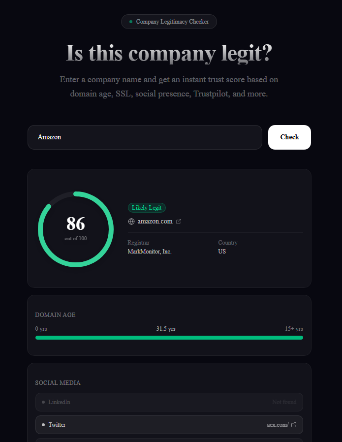

A full-stack web app that scores any company's legitimacy 0–100 by analysing domain age, SSL, social media presence, Trustpilot ratings, and more — with a live CI/CD pipeline.

Company Checker is a full-stack web application that helps users determine whether a company is legitimate before engaging with it. Given a company name, the app automatically locates its website and runs a series of checks — WHOIS domain age lookups, SSL verification, page content analysis, social media detection, and Trustpilot scraping — returning a 0–100 trust score with a detailed signal breakdown.
The backend is built with Next.js API routes and uses Axios and Cheerio for HTTP requests and HTML parsing, with whois-json for domain registry lookups. All async checks run in parallel using Promise.all, keeping response times under 15 seconds despite querying multiple external sources. The frontend features an animated SVG score gauge, a live status feed during loading, company autocomplete via the Clearbit API, and a full dark/light mode toggle powered by next-themes.
The project is deployed on Vercel with a GitHub Actions CI pipeline that runs TypeScript type checking, ESLint linting, and a production build on every push. This ensures that broken code is caught before it ever reaches the live site.